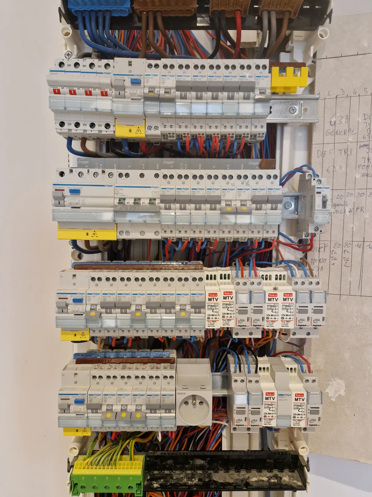

Électricité industrielle & automatisme
Armoires, automates, moteurs. Pour les professionnels de la Drôme provençale.
Autour de Nyons, il y a des caves coopératives, des moulins à huile, des distilleries, des ateliers et des exploitations agricoles. Tous ont des armoires électriques, des moteurs et des automates — et font souvent venir une entreprise de Valence ou d'Avignon faute de trouver quelqu'un sur place.
L'électricité industrielle et l'automatisme font partie de mes activités déclarées depuis la création de l'entreprise. Sur une panne de ligne un jour de récolte, la différence entre un dépanneur à vingt minutes et un à deux heures n'est pas un détail.
Ce n'est pas une corde ajoutée à mon arc récemment. Avant de m'installer, j'ai travaillé plusieurs années chez Électricité Générale Reboul-Cotte, spécialisée dans l'électrification industrielle et le tertiaire, et j'étais déjà sur des chantiers d'usines pendant ma formation. Voir mon parcours.
Ce que je réalise
- Réalisation et modification d'armoires électriques
- Câblage de puissance et de commande, triphasé
- Raccordement et protection de moteurs, démarreurs, variateurs de vitesse
- Automatismes et automates programmables
- Distribution basse tension, chemins de câbles, alimentation de machines
- Éclairage d'atelier, de hangar et de local technique
- Dépannage et maintenance d'installations existantes
- Mise en conformité d'installations anciennes
Devis gratuit
Décrivez-moi votre besoin. Je vous rappelle dans la journée, et le devis suit sous 48 h par email.
07 81 06 73 79 Formulaire de devisEn images
Des chantiers que j'ai réalisés. Cliquez pour agrandir.
Comment ça se passe
Quatre étapes, pas de surprise.
On se voit sur place
Je viens sur site relever l'existant, et l'intervention se cale ensuite sur vos contraintes de production.
Vous recevez le devis
Sous 48 h, par email en PDF — ou remis en mains propres si vous préférez. Détaillé poste par poste, matériel annoncé. Gratuit et sans engagement.
On planifie
On fixe une date ensemble. Je vous annonce la durée et les éventuelles coupures de courant.
Je réalise
Chantier protégé, nettoyé chaque soir. À la fin, je vous explique l'installation et je fournis les attestations.
Questions fréquentes
Vous intervenez sur les exploitations agricoles ?
Oui : bâtiments d'élevage, hangars, systèmes d'irrigation, chambres froides, matériel de cave. Ce sont des installations exigeantes — humidité, poussière, corrosion — qui demandent du matériel adapté et un entretien régulier.
Pouvez-vous reprendre une installation faite par quelqu'un d'autre ?
Oui. Je commence par un relevé de l'existant, parce qu'intervenir sur une armoire non documentée sans l'avoir comprise, c'est le meilleur moyen de créer une panne. Je vous laisse un schéma à jour à la fin de l'intervention.
Proposez-vous des contrats de maintenance ?
Je peux mettre en place des visites périodiques : contrôle des serrages, thermographie des points chauds, vérification des protections. Sur du matériel de production, c'est ce qui évite l'arrêt au pire moment. À voir ensemble selon votre installation.
Vous travaillez en haute tension ?
Non. Mon activité couvre la basse tension. Pour un poste HT ou une intervention sur un transformateur, il faut une entreprise spécifiquement habilitée.
Un projet ? Une question ?
Le premier échange ne coûte rien, et vous saurez tout de suite où vous allez.